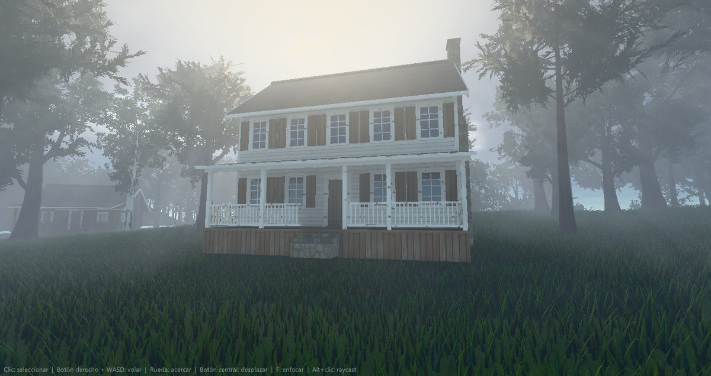
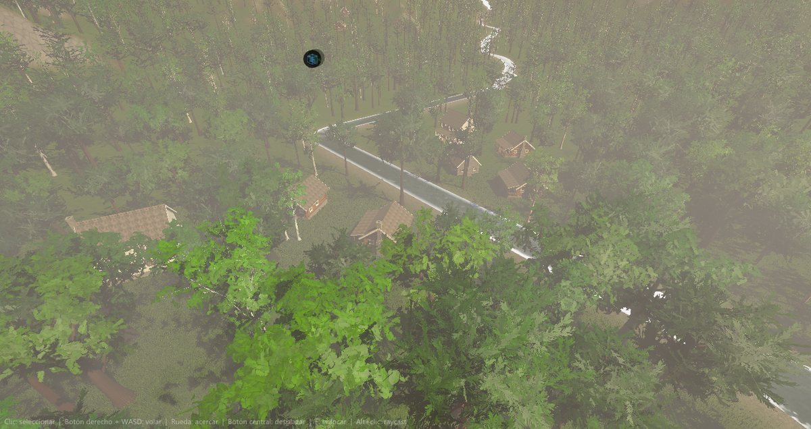
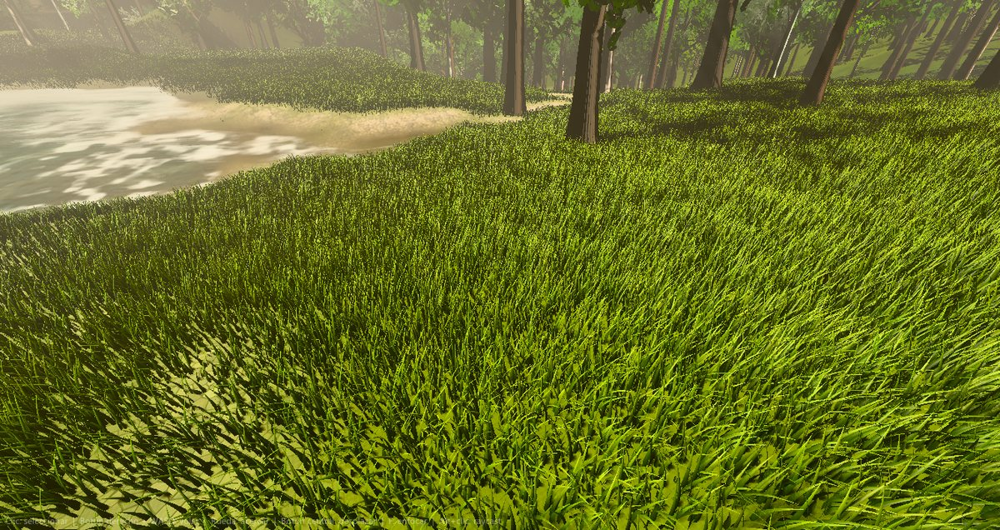
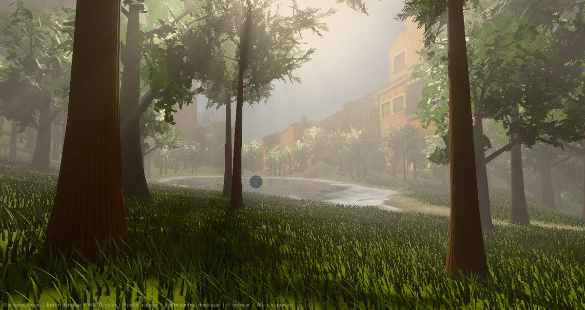
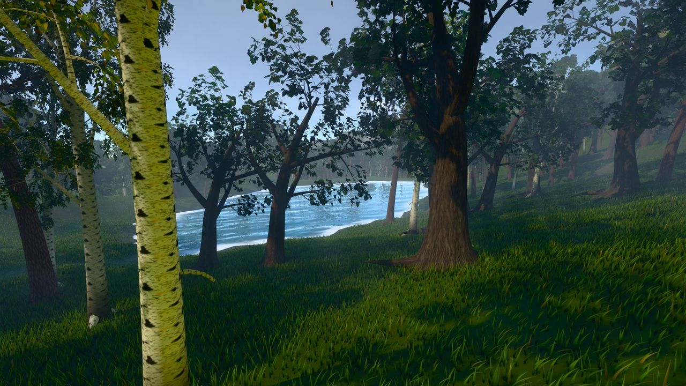
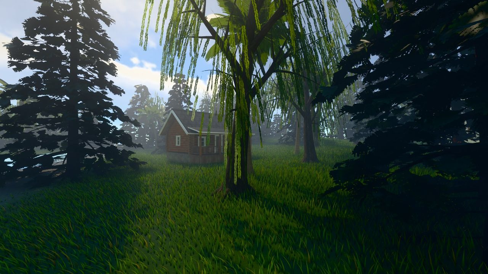
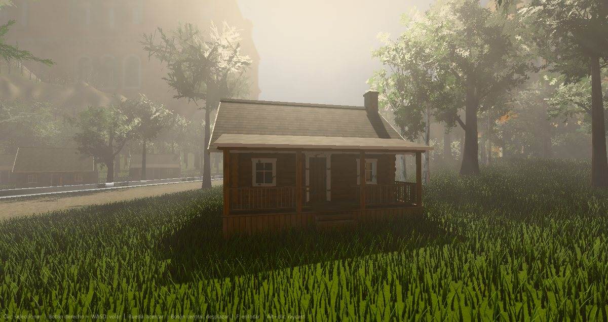
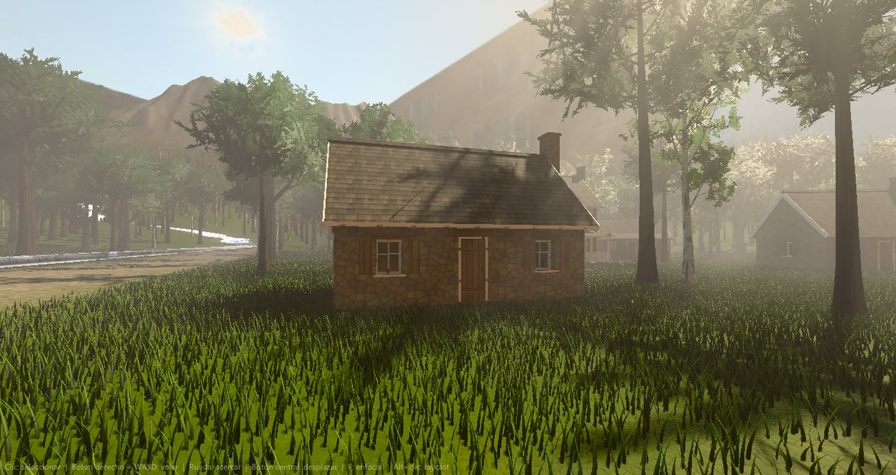

Mundo procedural
Terreno con erosión, ríos y mar, hierba en la GPU, árboles procedurales y casas y aldeas.
En esta página
Un mundo entero en unos segundos: relieve con erosión, mar, ríos y lagos, capas con texturas realistas, hierba en la GPU que se aparta con la física, árboles procedurales y aldeas de casas. Todo se genera en el editor y queda en la escena como objetos normales, que se pueden editar, mover o borrar.


Generador de terreno
Ventana > Generador de terreno. Se elige una forma (isla, archipiélago, continente, cordilleras o cañones), una semilla y se pulsa Generar. Se calcula en segundo plano (barra de progreso y Cancelar; una isla de 2 km con 1025 vértices por lado tarda menos de un segundo) y crea el grupo Mundo generado. Volver a generar reemplaza ese grupo.
| Apartado | Qué controla |
|---|---|
| Tamaño | Lado en metros, altura máxima, resolución (257 a 2049) y nivel del mar. |
| Relieve | Escala de las formas, montañas, crestas afiladas, colinas, deformación (domain warping), mesetas y costa irregular. |
| Erosión | Lluvia (gotas que excavan cauces y dejan sedimentos), su fuerza, y desmoronamiento de las laderas por encima del ángulo de reposo. |
| Agua | Océano, número de ríos (nacen arriba y bajan siguiendo el terreno hasta el mar), su anchura y profundidad, y lagos en las cuencas. |
| Capas | 8 capas pintadas por reglas (hierba, hierba seca, tierra, roca, arena, grava, nieve y barro) con texturas PBR procedurales en Assets/Terrains/Texturas; franja de playa, pendiente de la roca, cota de la nieve. |
| Vegetación | Hierba en la GPU (briznas por m²) y árboles (por hectárea). |
| Aldea | Número de casas procedurales (0 = sin aldea). Ver Casas y cabañas. |
La cámara del editor y la del juego alargan su distancia de dibujado para ver el mundo entero. Por MCP:
generate_terrain (mismos parámetros, más houses) y ground_height para saber la
altura del suelo en un punto.
Hierba (GPU)
El componente Grass va en el terreno y crece donde está pintada su capa (la seca la amarillea). No hay mallas: cada fotograma un compute shader recorre una rejilla fija al mundo alrededor de la cámara, descarta lo que queda fuera de la vista y escribe las briznas visibles; cerca con 7 tramos y lejos con 3, más anchas y menos. Hasta 3 millones de briznas. Las briznas tienen perfil de hoja, se mecen con rachas de viento y dejan pasar la luz a contraluz (modelo de Disney subsurface, más en la punta).
Como un prado de verdad: las briznas crecen en matas (centros repartidos al azar, uno cada ~0,5 m) que se abren hacia fuera desde su centro, son más altas en el medio y se mecen juntas. Cada mata tiene su tono (unas más amarillas, otras más azuladas) y el campo tiene manchas de 7 y 23 m: zonas frondosas, más altas y oscuras, y zonas pobres, más bajas, claras y amarillentas, con más briznas muertas (paja). Algunas puntas están secas. Todo eso lo escala la Variación de color (0 = todas iguales). La brizna es casi toda del Color de la punta; el Color base solo asoma abajo (lo oscuro del pie lo pone la oclusión).
Reacciona a la física: los objetos con Rigidbody no estático (y un collider) a menos de
120 m de la cámara la apartan y la aplastan; los 32 más cercanos. Propiedades: densidad, distancia máxima y de detalle,
altura y su variación, anchura, curvatura, colores de base, punta y seca, viento y cuánto la empujan.




Árboles procedurales
El componente Foliage (Vegetación) reparte árboles por el terreno según la altura y la pendiente, y los dibuja instanciados con culling en la GPU. Cada árbol se genera como un SpeedTree sencillo: tronco y ramas de verdad (hasta tres niveles, filotaxia de 137,5°, gravedad, fototropismo y torsión), racimos de hojas con translucidez y normales esféricas para que la copa se ilumine como un volumen, y tres LOD del mismo esqueleto.
Texturas procedurales (generadas al abrir, en paralelo, ~1 s): roble con crestas largas que se separan y se juntan, surcos en V y alguna grieta y liquen; pino con placas gruesas separadas por fisuras rojizas y escamas por capas; abedul blanco con lenticelas; ramitas de roble, abedul y sauce; borlas de agujas del pino y ramas planas del abeto (silueta triangular, densa). De cerca, cada borla del pino son siete brotes en 3D (cepillos de agujas que salen en todas direcciones de la punta de la ramita, un volumen y no un abanico plano); de lejos, un abanico de brotes en dos tarjetas cruzadas, más barato. Las ramas finas tienen la corteza lisa y, en el pino, la parte alta del tronco y las ramas son anaranjadas, como el pino silvestre. El musgo (arriba de las ramas y en el pie) es verde oliva apagado.
Hojas a contraluz: la luz que atraviesa una hoja sale más clara y amarillenta que la que refleja (transmisión difusa más el brillo mirando al sol a través de ella) y la luz del cielo también las atraviesa: las copas vistas desde abajo ya no son siluetas negras.
En Especies se elige qué árbol es cada una de las 3 especies de la mezcla (pino, abeto, roble, abedul, palmera o sauce) y su semilla, altura, cantidad de hojas y de ramas y lo torcidos que son. No crecen en el agua: se quitan del cauce de los ríos (y su orilla) y de lo que queda bajo el nivel de los lagos, ni dentro de las casas de las aldeas (claros).
Bajo el agua
El efecto de bajo el agua (color, niebla, cáusticas) funciona con todos los tipos de agua: océano, lagos y ríos. Solo se activa donde hay agua de verdad: dentro del rectángulo del lago, con el suelo por debajo de la superficie y la cámara por encima del fondo. Fuera del lago, en una orilla seca o bajo tierra no se ve. En los ríos, la superficie es la del punto donde está la cámara.
Casas y cabañas
Ventana > Generador de casas crea casas procedurales listas para el juego: cabaña de troncos (troncos redondos cruzados en las esquinas), cabaña de tablas, casita de piedra y casa de campo de dos plantas. Se elige el estilo, la semilla (otras medidas y ventanas), ancho, fondo, plantas, altura, pendiente del tejado, alero, ventanas, porche con barandilla, chimenea y contraventanas.


- Crear en la escena la pone delante de la cámara, sobre el suelo. La puerta mira a +Z.
- Crear aldea en el terreno (o el apartado Aldea del generador de terreno) busca un sitio llano y seco, fuera de ríos y lagos, reparte las casas alrededor de una plaza con la puerta hacia ella y abre claros en la vegetación.
Pensadas para el juego: entre 1.000 y 6.000 triángulos por casa, con LOD automáticos. Todas comparten 9
materiales (Assets/Casas/Materiales: troncos, veta, tablas, revestimiento, piedra, tejado, marcos, vidrio y
hierro) con texturas PBR y relieve (parallax) que se crean una sola vez en Assets/Casas/Texturas; las casas
iguales son instancias del mismo modelo (Assets/Casas/Modelos). Los materiales se pueden editar y todas las
casas cambian.
Cada casa tiene dos hijos: Casa, con MeshCollider, y Puerta, con
BoxCollider y su origen en la bisagra. Para abrirla desde Lua basta con girarla en Y:
-- Script en la raiz de la casa: E abre y cierra la puerta poco a poco.
local Casa = {}
function Casa:Start()
self.puerta = self.entity:find("Puerta")
self.angulo = 0
end
function Casa:Update(dt)
if Input.getKeyDown("e") then self.abierta = not self.abierta end
local objetivo = self.abierta and -100 or 0
self.angulo = self.angulo + (objetivo - self.angulo) * math.min(dt * 6, 1)
self.puerta.rotation = Vec3(0, self.angulo, 0) -- giro local en grados
end
return Casa
Los cristales son opacos y reflejan el cielo (no se ve el interior), para no gastar rendimiento. Por MCP:
generate_house (style: log, timber, stone o
farm; medidas, position, yaw) o generate_house con
village = número de casas para una aldea.